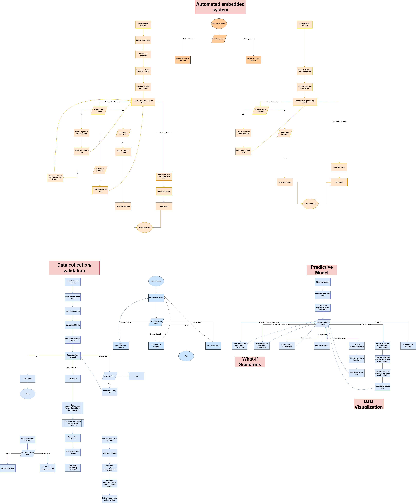
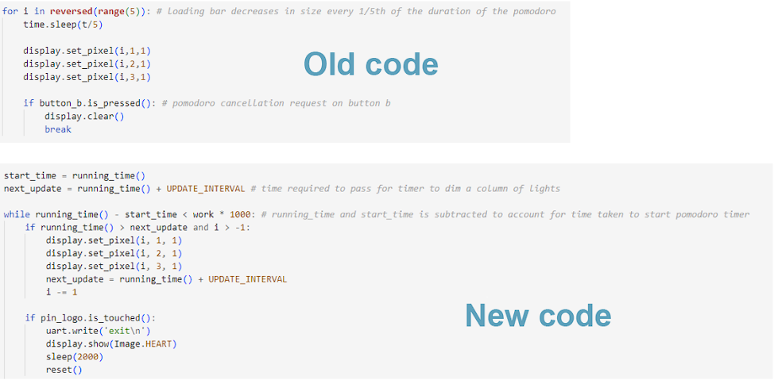
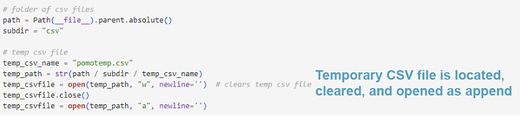
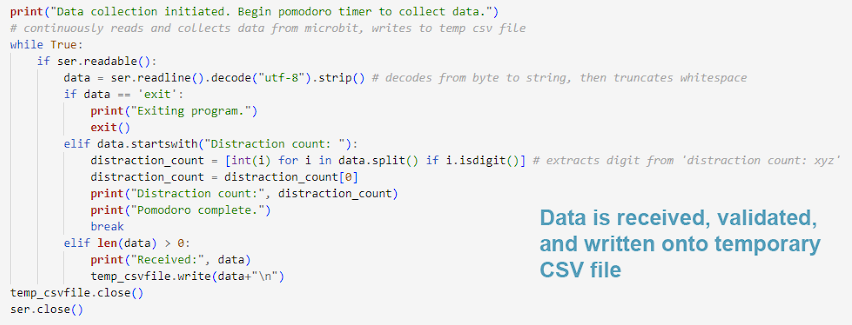
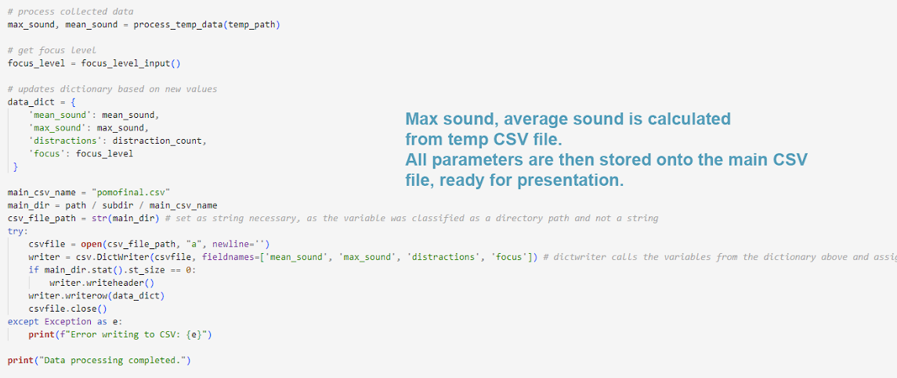
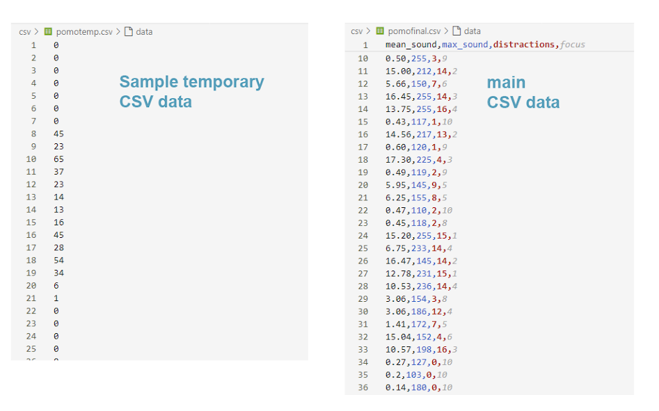

Meeting the Brief
Investigation
I wanted to create a project that would benefit my own mental health, making me the end-user. I looked at the suggested ideas provided in the brief and initially focused on Enhancing or monitoring sleep quality, because out of all the provided areas, it was the most relevant to me as I often struggle with a lack of sleep. I spent a considerable amount of time designing a sleep tracker that calculates restlessness based on accelerometer data, but I began to realize that although it would satisfy the brief, the micro:bit itself may likely break from static electricity and from being under a pillow for entire nights. I begrudgingly scrapped that project.
Two other areas that stuck out to me were Improving concentration levels and Reducing tendencies to procrastinate. Examples of how this manifested in my life were:
- Procrastinating from doing homework
- Getting distracted easily while doing homework
- Poor time management/Inconsistent study habits
- Ineffective studying techniques
I began searching for existing solutions that could tackle these issues. As the brief requires an embedded system, I only considered solutions that were possible with a micro:bit. I looked at the URLs provided, but I didn’t find any answers that were relevant to these issues of mine. I then began brainstorming and came up with ideas such as:
- Task tracker: Allow users to input their homework tasks and deadlines.
- Distraction counter: Users record the number of times they've been distracted throughout a study interval.
- Pomodoro timer: A technique that helps users break their study sessions into manageable and approachable intervals.
- Meditation timer: Meditation could possibly better one's concentration, especially after lengthy study sessions.
- Ambient noise meter: Shows how noise correlates to concentration levels.
- Task stopwatch: Analyses time spent on tasks for insights into productivity.
- Light level meter: Shows how light level correlates to concentration levels.
I realized that I could combine some of these ideas into a pomodoro timer. I looked at different websites to see how they approach pomodoro timers, and the general consensus of a pomodoro timer’s steps are as follows:
- Begin 25-minute timer.
- Focus on your work until the timer ends.
- Take a 5-minute break from work.
- Repeat.
As these didn’t look too complicated to program onto a Micro:bit, I chose it as my project idea. The other ideas from that list that I wanted to incorporate onto the Pomodoro timer were the distraction counter, noise meter, and light level meter.
Plan and Design
The Pomodoro timer consists of a Micro:bit and a computer. It aims to enhance the user’s wellbeing by maintaining one’s focus on doing tasks.
These are the inputs and outputs that will be used throughout the project:
Inputs
- Micro:bit’s built in microphone to record noise level of environment
- Micro:bit’s built in light sensor to record light level of environment
- User inputting their focus level throughout the work session on a scale of 1-10
Outputs
- Micro:bit displaying timer on LED screen
- Sends data over USB to PC
The user presses button A on the Micro:bit to begin a work session, starting 25-minute timer visualized by dimming LED lights over time. Upon completion, the Micro:bit plays a sound and clears its display, waiting for another button press. If the user presses button B, a rest session begins, starting a similar 5-minute timer in which the user rests until it’s completed. The user can also press the touch logo to cancel an ongoing timer.
Whilst the timer is running, the noise level and light level of the environment are simultaneously recorded using the Micro:bit’s built in microphone and light sensor. The user can also press button B to incrementally record the number of times they’ve been distracted. This data is sent to the PC over a USB cable, validated, then written into a CSV. Post-session, the average sound and light level are calculated, and the user is then prompted to input their focus level throughout their work session on a scale of 1-10. After everything has been successfully processed, these four parameters are recorded onto another CSV file.
Description of these four parameters:
- Average sound level, float
- Average light level, float
- Number of times distracted, int
- Focus level, int
The average sound level, average light level, and number of times distracted are the independent variables used to predict the focus level.
The user may use the predictive model to view the following:
- What-if question 1: Predicts focus level in a quiet, well-lit environment.
- What-if question 2: Predicts focus level in a loud, dimly-lit environment.
- Custom input: Predicts focus level based off custom user input.
- What-if visualization: Displays a bar chart showing how both environments differ in focus levels.
- Graphing: Displays a graph that demonstrates how the focus level correlates to each parameter.
Flowchart
Create
Progress log
This progress log shows a record of milestones achieved in each week throughout the duration of the project.
Week 1
Took a look at the requirements of the brief, began planning
Finalized on the idea of a pomodoro timer using microbit
Sketched out possible features of pomodoro timer
- timestamp every interval recorded
- intervals per day recorded
- work duration of pomodoro timer recorded, adjustable timer
Week 2
Wrote a rudimentary pomodoro timer on microbit
Scratched the pomodoro idea due to hardware limitations (microbits lack a real-time clock, making it incapable of recording local timestamps)
Began working on a sleep tracker prototype on makecode
Rewrote sleep tracker on micropython
Week 3:
Scrapped sleep tracker, too inconvenient to work with
Typed out investigation section
Returned back to working on a pomodoro timer with different parameters
inputs
- pressing microbit button to record distraction count
- recording sound levels
- recording light levels
outputs
- sending data through usb to pc (thonny)
- displaying pomodoro timer's time left on microbit
- Built flowchart
- completed plan and design section
Week 6:
Wrote pomodoro timer on micropython (pomosend.py)
Revised pomodoro timer, previous timer didn't work as intended
Wrote code on VS Code to receive data from microbit (pomoreceive.py)
Week 7:
Scrapped light level meter, too inaccurate
Added CSV code to process and store data
Removed herobrine
Added break interval timer to Micro:bit code
Week 8:
Recorded more pomodoro data
Week 11:
Finished recording enough pomodoro data
figuring out how to use linear regression
Week 12:
Implemented linear regression
Added two what if questions showing focus levels in quiet and loud environments
Week 13:
Made a scatterplot graph with three subplots showing how focus level correlates to different parameters
added cyberpunk styling to graphs
Week 14:
added more checks to ensure that user is inputting valid data
Week 15:
recorded video
edited video
wrote creating section
wrote evaluation
Testing
Although not exhaustive, here is a table of what I've tested:
| Status | Case | Input | Expected Result | Actual Result | msg |
|---|---|---|---|---|---|
| pass | Processing valid temporary CSV data file | CSV with sound levels: 0, 10, 5 | max sound: 10, mean sound: 7.5 | max sound: 10, mean sound: 7.5 | |
| fail | Processing invalid temporary CSV data file | CSV with sound levels: 0, "wasd", 0 | ValueError | TypeError: Could not convert wasd to numeric | My code ensures that invalid data doesn’t get written, but if invalid data somehow gets into the CSV file, an error will produce. |
| pass | Focus level input | 5 | Accepts value | Accepts value | |
| pass | Focus level input | 11, "eleven", "four" | Error message, re-prompt | Error message, re-prompt | |
| pass | Main menu input choice | 1,2,3 | Runs chosen option | Runs chosen option | |
| pass | Main menu input choice | 5,w | Error message, re-prompt | Error message, re-prompt | |
| pass | Custom input prediction | Mean: 30, max: 25 | Error: Mean sound level cannot be greater than max sound level. | Error: Mean sound level cannot be greater than max sound level. | |
| pass | Custom input prediction | Mean, max, and distraction values are the same as the quiet environment values | Both focus levels are equal | Both focus levels are equal |
Obstacles
One problem I encountered was in the initial stage of building a Pomodoro timer. I initially wrote a timer based off a loop that iterates every 5 minutes until completion, but I discovered that other functions like the distraction counter, noise level recorder weren’t being called at all until the 5-minute sleep function was completed. As Micro:bit doesn’t support multi-threading, I was at a loss on what to do. I came across an article[1] however, that solved this dilemma for me. In short, the idea is to utilize the Micro:bit’s running time, checking, say every 50ms or so using a while True loop, if the 5 minutes has passed. This method allows the timer to both progressively get dimmer whilst also allowing the other functions to be called.
Important code
An important idea that allowed me to collect and store processed data was the idea of having a temporary CSV file and a main CSV file. The temporary CSV file acts as a buffer, holding only the data relevant to the current session, making handling sound data more straightforward. While the Pomodoro timer is running, it writes data to the temporary CSV. When the timer is completed, the average sound level and max sound level are calculated from the temporary CSV. These parameters, along with the distraction count and focus level, are stored onto the main CSV file. Whenever the program begins running its data collection function again, temporary CSV is then wiped, allowing it to record sound data relevant to only its current session again.
   Evaluation
The major difference between the initial plan and the final artefact is the lack of light sensor utilization. My Micro:bit light sensor reads 0, despite being in well-lit rooms. This led me to replacing the light level parameter with the maximum recorded sound level.
Evaluating brief requirements
- Inputs/Outputs
- Receives, validates, processes and stores sound data into a dataset, gathered from the Micro:bit.
- A Dataset is stored in a CSV containing the parameters “average sound level (float)”, “maximum sound level (int)”, “number of times distracted (int)”, and “focus level (int)”. The focus level is the dependent variable.
- Python's scikit-learn predicts how the user’s focus level varies due to noise level, based on its analysis of the dataset.
- Two what-if questions are answered: Predicted focus level in a quiet environment, and in a loud environment.
- The user can view how their focus level correlates to each parameter, as a scatter-plot graph.
Inputs
button A to begin work session
button B to begin rest session/incrementally record number of times distracted
touch logo to cancel session
Micro:bit's built in microphone to record noise level of environment
User inputting their focus level throughout the work session on a scale of 1-10
Outputs
Micro:bit displaying timer on LED screen
Sends data over USB to PC
Evaluating user requirements
These four principles described by this article[1] state the benefits of using a Pomodoro timer:
- Limits the amount of time the brain must focus.
- Demolishes the tendency to procrastinate.
- Reduces distraction born of multitasking.
- Pushes the individual toward completing tasks rather than just working on them.
Based on the listed needs provided in the investigation section, the above principles aptly address them.
Shortcomings
Many features that my artefact can be improved on relate to the accuracy of the predictive model. One aspect that could be improved is to increase the size of the dataset. It currently has around 16 hours’ worth of data, which amounts to 38 work sessions in total. With a bigger sample size, the accuracy of the predicted focus level will certainly be more accurate.
Another aspect is that although the focus level is based on a scale from 1-10, linear regression isn’t bounded to a certain range. This can lead it to producing negative values or values over 10, given certain parameters. I simulated the horrible parameters (parameters at max, distractions at 30) and got a predicted focus level of around -40. The best parameters (all parameters at 0) got 10.05.
To remedy this, I simply clipped whatever out-of-bounds value the linear regression to a floor of 1 and a ceiling of 10. This is certainly not ideal, and other options such as using a beta regression model, which produces a value of a range 0-1 would be more apt for accuracy. I only chose linear regression because I already understood it from my Maths classes on Statistics 2, but given time to understand beta regression, I would implement that model instead.
References
Resources used:
- https://datatofish.com/use-pandas-to-calculate-stats-from-an-imported-csv-file/
- https://microbit-micropython.readthedocs.io/en/v2-docs/uart.html
- https://stackoverflow.com/questions/37016946/remove-b-character-do-in-front-of-a-string-literal-in-python-3
- https://stackoverflow.com/questions/8270092/remove-all-whitespace-in-a-string
- https://stackoverflow.com/questions/45138122/how-to-check-if-words-starts-with-within-the-alphabet-range
- https://medium.com/groklearning/become-a-time-lord-with-the-bbc-micro-bit-c4b8b4e2d747
- https://stackoverflow.com/questions/20347766/pythonically-add-header-to-a-csv-file
- https://stackoverflow.com/questions/2104080/how-do-i-check-file-size-in-python
- https://python.microbit.org/v/3/reference/data-logging
- https://www.w3schools.com/python/python_dictionaries.asp
- https://www.toppr.com/guides/python-guide/references/methods-and-functions/methods/dictionary/update/python-dictionary-update/
- https://stackoverflow.com/questions/3430372/how-do-i-get-the-full-path-of-the-current-files-directory
- https://stackoverflow.com/questions/48190959/how-do-i-append-a-string-to-a-path
- https://stackoverflow.com/questions/45484323/access-1st-column-in-pandas-dataframe
- https://saturncloud.io/blog/understanding-the-differences-between-numpy-reshape1-1-and-reshape1-1/#2
- https://learnpainless.com/how-to-add-correlation-coefficient-to-scatter-plot-in-python/
- https://matplotlib.org/stable/api/_as_gen/matplotlib.pyplot.bar.html
- https://stackoverflow.com/questions/25543978/annotate-subplots-in-a-figure-with-a-b-c
- https://stackoverflow.com/questions/522563/how-to-access-the-index-value-in-a-for-loop
- https://matplotlib.org/stable/api/_as_gen/matplotlib.pyplot.subplots.html
- https://matplotlib.org/stable/api/_as_gen/matplotlib.axes.Axes.text.html
- https://stackoverflow.com/questions/1271023/resize-a-figure-automatically-in-matplotlib
- https://github.com/dhaitz/mplcyberpunk
- https://github.com/STJRush/handycode/blob/master/ALT3%20Simulations/3%20Multiple%20Linear%20Regression%20ABCX/2%20Linear%20Reg%20Model%202D%20Graphs%20using%20sklearn.py
- https://stackoverflow.com/questions/983354/how-do-i-wait-for-a-pressed-key
- https://stackoverflow.com/a/63605745
- https://stackoverflow.com/questions/799944/why-is-the-table-border-not-showing-in-this-html-table
Word Count
| Section | Word Count |
| Meeting the brief | N/A |
| Investigation | 401 |
| Plan and design | 380 |
| Create | 805 |
| Evaluation |
506 |
| Total |
2092 |